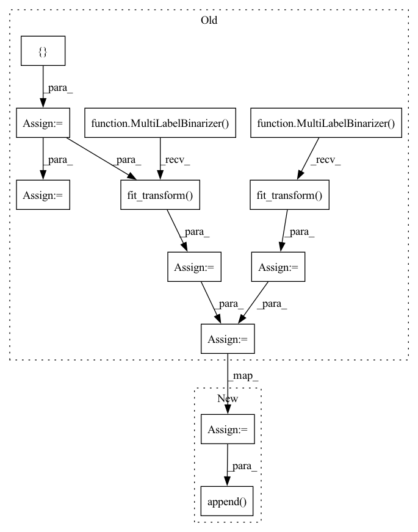

Pattern ID :1638

Before Change
self.model.eval()
test_pred_outputs = []
test_true_outputs = []
for batch in tqdm(self.test_loader):
src_input, _, tar_output, encoder_mask, _ = batch
src_input, tar_output, encoder_mask = \
src_input.to(device), tar_output.to(device), encoder_mask.to(device)
tar_input = torch.zeros(tar_output.shape[0], tar_output.shape[1]).long()
for seq in tar_input:
seq[0] = sos_id
output = self.model(src_input, tar_input, encoder_mask) // (B, L, vocab_size)
output = torch.argmax(output, dim=-1) // (B, L)
output_list = output.tolist()
tar_output_list = tar_output.tolist()
trimmed_output_list, trimmed_tar_output_list = self.trim_output(output_list, tar_output_list)
test_pred_outputs += trimmed_output_list
test_true_outputs += trimmed_tar_output_list
test_true_outputs = MultiLabelBinarizer().fit_transform(test_true_outputs)
test_pred_outputs = MultiLabelBinarizer().fit_transform(test_pred_outputs)
test_accuracy = metrics.accuracy_score(test_true_outputs, test_pred_outputs)
print(f"Testing finished! Test accuracy: {test_accuracy}")
After Change
trimmed_output_list, trimmed_tar_output_list = self.trim_output(output_list, tar_output_list)
test_accuracy = metrics.accuracy_score(trimmed_tar_output_list, trimmed_output_list)
test_accuracies.append(test_accuracy)
mean_test_accuracy = np.mean(test_accuracies)
In pattern: SUPERPATTERN
Frequency: 3
Non-data size: 12
Instances
Fragment ID: 7748359
Project Name: devjwsong/transformer-translator-pytorch
Commit Name: 4097d9eb8241bdf6773e3d9ab62051c7f4ac851c
Time: 2020-04-30
Author: enflwodn@gmail.com
File Name: src/main.py
M Class Name: Manager
N Class Name: Manager
M Method Name: test(2)
N Method Name: test(2)
M Parent Class:
N Parent Class:
M File Name: src/main.py
N File Name: src/main.py
M Start Line: 165
M End Line: 191
N Start Line: 158
N End Line: 182
'>
Before Change
valid_losses = []
valid_pred_outputs = []
valid_true_outputs = []
for batch in tqdm(self.valid_loader):
src_input, _, tar_output, encoder_mask, _ = batch
src_input, tar_output, encoder_mask = \
src_input.to(device), tar_output.to(device), encoder_mask.to(device)
tar_input = torch.zeros(tar_output.shape[0], tar_output.shape[1]).long()
for seq in tar_input:
seq[0] = sos_id
output = self.model(src_input, tar_input, encoder_mask) // (B, L, vocab_size)
loss = self.criterion(output.view(-1, sp_vocab_size), tar_output.view(batch_size * seq_len))
valid_losses.append(loss.item())
output_list = torch.argmax(output, dim=-1).tolist()
tar_output_list = tar_output.tolist()
trimmed_output_list, trimmed_tar_output_list = self.trim_output(output_list, tar_output_list)
valid_pred_outputs += trimmed_output_list
valid_true_outputs += trimmed_tar_output_list
mean_valid_loss = np.mean(valid_losses)
valid_true_outputs = MultiLabelBinarizer().fit_transform(valid_true_outputs)
valid_pred_outputs = MultiLabelBinarizer().fit_transform(valid_pred_outputs)
valid_accuracy = metrics.accuracy_score(valid_true_outputs, valid_pred_outputs)
return mean_valid_loss, valid_accuracy
After Change
trimmed_output_list, trimmed_tar_output_list = self.trim_output(output_list, tar_output_list)
valid_accuracy = metrics.accuracy_score(trimmed_tar_output_list, trimmed_output_list)
valid_accuracies.append(valid_accuracy)
mean_valid_loss = np.mean(valid_losses)
mean_valid_accuracy = np.mean(valid_accuracies)
'>
Fragment ID: 7748360
Project Name: devjwsong/transformer-translator-pytorch
Commit Name: 4097d9eb8241bdf6773e3d9ab62051c7f4ac851c
Time: 2020-04-30
Author: enflwodn@gmail.com
File Name: src/main.py
M Class Name: Manager
N Class Name: Manager
M Method Name: validation(1)
N Method Name: validation(1)
M Parent Class:
N Parent Class:
M File Name: src/main.py
N File Name: src/main.py
M Start Line: 122
M End Line: 153
N Start Line: 119
N End Line: 146
'>
Before Change
train_losses = []
train_pred_outputs = []
train_true_outputs = []
for i, batch in tqdm(enumerate(self.train_loader)):
src_input, tar_input, tar_output, encoder_mask, decoder_mask = batch
src_input, tar_input, tar_output, encoder_mask, decoder_mask = \
src_input.to(device), tar_input.to(device), tar_output.to(device),\
encoder_mask.to(device), decoder_mask.to(device)
output = self.model(src_input, tar_input, encoder_mask, decoder_mask) // (B, L, vocab_size)
self.optim.zero_grad()
loss = self.criterion(output.view(-1, sp_vocab_size), tar_output.view(batch_size * seq_len))
loss.backward()
self.optim.step()
train_losses.append(loss.item())
output_list = torch.argmax(output, dim=-1).tolist()
tar_output_list = tar_output.tolist()
trimmed_output_list, trimmed_tar_output_list = self.trim_output(output_list, tar_output_list)
train_pred_outputs += trimmed_output_list
train_true_outputs += trimmed_tar_output_list
mean_train_loss = np.mean(train_losses)
train_true_outputs = MultiLabelBinarizer().fit_transform(train_true_outputs)
train_pred_outputs = MultiLabelBinarizer().fit_transform(train_pred_outputs)
train_accuracy = metrics.accuracy_score(train_true_outputs, train_pred_outputs)
print(f"Epoch: {epoch}||Train loss: {mean_train_loss}||Train accuracy: {train_accuracy}")
summary.add_scalar("loss/train_loss", mean_train_loss, epoch)
After Change
trimmed_output_list, trimmed_tar_output_list = self.trim_output(output_list, tar_output_list)
train_accuracy = metrics.accuracy_score(trimmed_tar_output_list, trimmed_output_list)
train_accuracies.append(train_accuracy)
mean_train_loss = np.mean(train_losses)
mean_train_accuracy = np.eman(train_accuracies)
'>
Fragment ID: 7748361
Project Name: devjwsong/transformer-translator-pytorch
Commit Name: 4097d9eb8241bdf6773e3d9ab62051c7f4ac851c
Time: 2020-04-30
Author: enflwodn@gmail.com
File Name: src/main.py
M Class Name: Manager
N Class Name: Manager
M Method Name: train(1)
N Method Name: train(1)
M Parent Class:
N Parent Class:
M File Name: src/main.py
N File Name: src/main.py
M Start Line: 65
M End Line: 96
N Start Line: 65
N End Line: 93